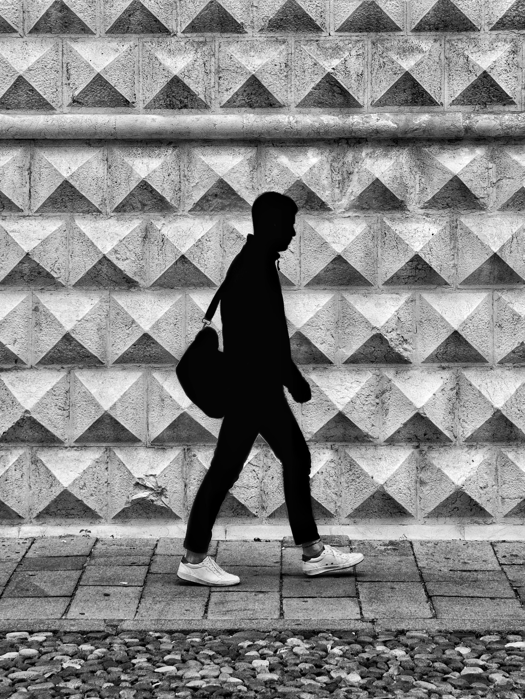
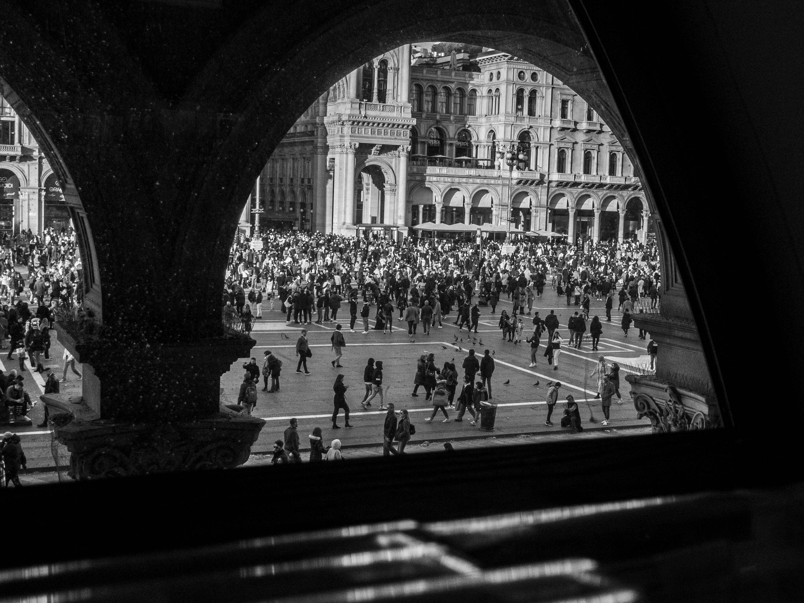
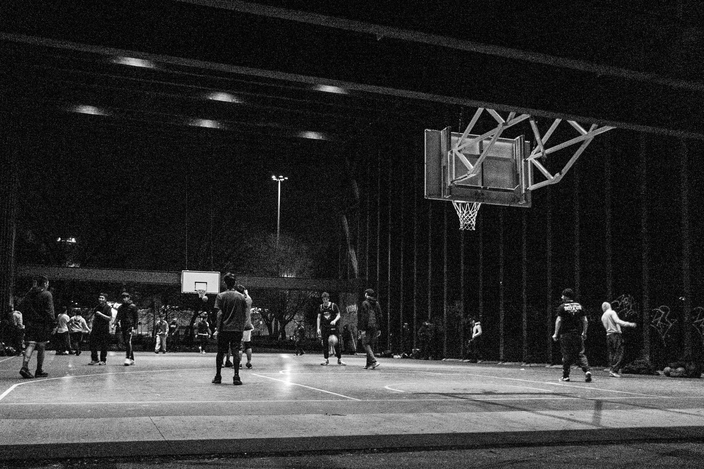
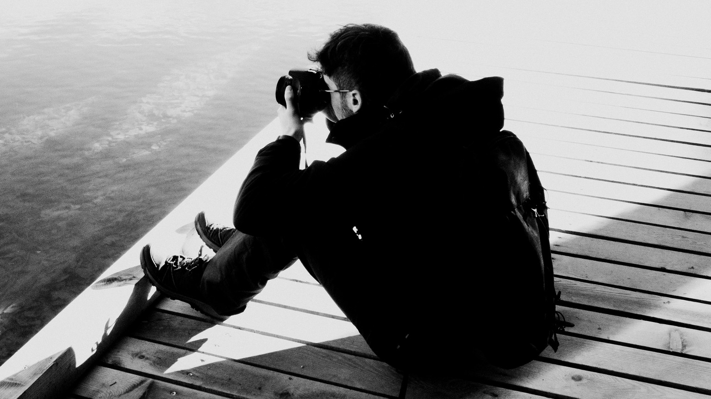
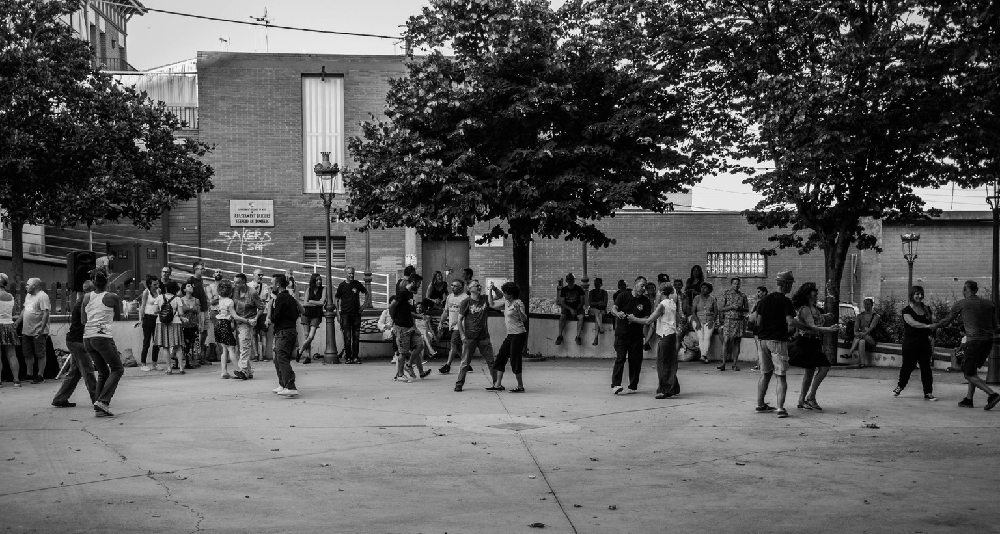

Photography
Echos of Italy
'Echoes of Italy' is my lens on the country’s timeless charm — candid moments, architectural details, and sun-kissed scenes.



From sun-drenched piazzas to intimate still-lives, I aimed to capture the soul of the country through light and composition.



From graphic design to interior spaces, see the breadth of my creative explorations.
More projects